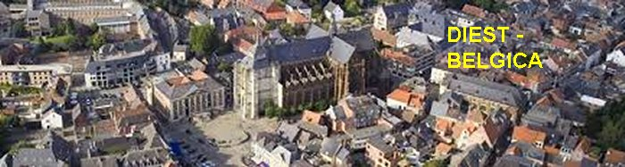
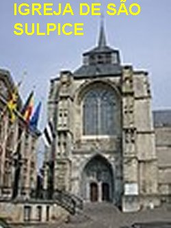

“A FÉ ABRE HORIZONTES”
A FAMÍLIA
João nasceu no dia 13 de Março
1599, em Diest, uma pequena cidade localizada no Flandres, próximo a Bruxelas,
capital da Bélgica; sendo Batizado na Igreja de 
VIDA ESCOLAR

Particularmente João tinha um grande afeto pelos seus irmãos, era companheiro eficiente e muito caridoso, que ajudava a todos, desde a menor dificuldade. Esse proceder era uma característica especial do seu gênio e também, a exemplo de seus pais, amava os estudos o que lhe proporcionava uma preciosa sabedoria e muita inteligência desde o período da infância. Com apenas seis anos de idade ingressou na “Klyne School”; mas em face de seu notável desempenho e demonstração de conhecimentos, logo em pouco tempo, foi transferido para a “Grande École”. Todos os dias pela manhã, saia de casa para o Colégio, mas passava na Igreja de Saint Sulpice onde foi Batizado, para rezar. O Pároco sempre observava a pontualidade daquele menino. Certo dia o convidou para ser “coroinha” nas celebrações, a fim de ajudar na Santa Missa. Ele aceitou com alegria. Assim, todos os dias o jovem saía de casa mais cedo, ajudava na Igreja e também piedosamente rezava as suas orações a DEUS; depois, seguia para as aulas no Colégio. Sem dúvida, João era bastante caprichoso e competente, e conduzia sempre os estudos com muita seriedade e satisfação. Por isso mesmo, com a idade de 10 anos, podia-se apreciar nele aquela evidente propensão para o sacerdócio.
TERRÍVEL DOENÇA DA MÃE
No ano de 1609, sua mãe foi acometida de uma séria e incurável doença. Os recursos médicos naquela época eram bem modestos. Ela não tinha condições para continuar naquele trabalho permanente e diário no lar, cuidando do marido e dos filhos. E assim, depois de permanecer durante meses num leito, ficou utilizando uma cadeira de rodas com locomoção precária. A partir desta época foi auxiliada por suas irmãs, que se revezava com um auxílio necessário a ela e as crianças. Então seu pai colocou os filhos num internato dos padres premonstratenses. João estava com a idade de 10 anos, e era uma criança viva e inteligente, que levava muito a sério as orações diárias que fazia carinhosamente a DEUS, revelando também em seu interior uma disposição sincera de sempre servir com alegria e até muito fervor, realizando demonstrações puras e carinhosas em todas as oportunidades, essencialmente para agradar e mostrar o seu amor sincero e apaixonado por JESUS e a SANTÍSSIMA VIRGEM MARIA.
ÉPOCA DIFÍCIL PARA O COMÉRCIO
Entretanto, aconteceu que a partir dessa época, os tempos começaram a ficar muito difíceis para o comércio em geral. Seu pai teve que retirá-lo do internato e decidiu confiá-lo ao Cônego Pierre van Emmerick, que era o Pároco da Igreja de Notre Dame em Diest. Esta solução foi boa, porque na verdade proporcionou ao jovem João uma especial formação intelectual e religiosa, consolidando os seus conhecimentos e recebendo muitos outros. No ano 1610 ele recebeu a sua Primeira e Sagrada Comunhão Eucarística. Ficou repleto de felicidade, porque era um desejo que crescia em sua alma e inundou o seu coração de alegria.
Apesar das economias que a família era forçada a fazer, no ano 1612 os negócios do pai começaram a fracassar ainda mais, dando origem à natural falta de dinheiro, e então, ele chamou o filho para ajudá-lo no trabalho. O rapaz obedientemente foi, mas lhe suplicou: “Pai não me impeça de continuar os meus estudos; viverei a pão e água, mas deixa-me ser Sacerdote.”
AUXÍLIO DIVINO
 DEUS misericórdia
infinita vendo o problema de João e de seus pais, a Providência Divina logo apresentou
a solução ideal: “Inspirou
as tias, irmãs do Carlos e da Isabel, suplicar trabalho para o jovem ao senhor
Capelão da Comunidade Religiosa de Diest. Ele estava necessitando de um auxiliar".
E então, ele decidiu
receber o João em sua casa. Na verdade, ainda que por pouco tempo, foi uma boa ajuda,
muito preciosa e na hora certa. Na continuidade, o pai senhor Carlos encontrou-se com
o Cônego Franz Von Groemendonk, que também era amigo da família, e trouxe notícias importantes,
sugerindo que “um aluno tão brilhante
como o João, deveria ser aluno da Grande École de Malines”. Sem demora o pai também recorreu aos parentes que tinham conhecimentos
dessa Escola, e em pouco tempo acabaram descobrindo que o senhor Cônego de Malines, senhor
Cônego Froymont, estava também precisando de um auxiliar, para trabalhar como instrutor de
alguns jovens da nobreza, os quais o senhor Cônego era o orientador espiritual. Desse
modo, o pai entrou em contato direto com o senhor Cônego. O religioso era um homem bom
e muito generoso, além de ser o Superior Geral do Estabelecimento de Malines. Com
simpatia acolheu a solicitação do senhor Carlos Berchmans, que coincidentemente atendia
também, aos interesses dele, isto porque naquela época o senhor Cônego estava realmente
procurando um estudante religioso para lhe ajudar na sua residência, trabalhando como
tutor, assistindo às jovens crianças da nobreza, podendo também frequentar como externo,
o Seminário do famoso Colégio de Malines.
DEUS misericórdia
infinita vendo o problema de João e de seus pais, a Providência Divina logo apresentou
a solução ideal: “Inspirou
as tias, irmãs do Carlos e da Isabel, suplicar trabalho para o jovem ao senhor
Capelão da Comunidade Religiosa de Diest. Ele estava necessitando de um auxiliar".
E então, ele decidiu
receber o João em sua casa. Na verdade, ainda que por pouco tempo, foi uma boa ajuda,
muito preciosa e na hora certa. Na continuidade, o pai senhor Carlos encontrou-se com
o Cônego Franz Von Groemendonk, que também era amigo da família, e trouxe notícias importantes,
sugerindo que “um aluno tão brilhante
como o João, deveria ser aluno da Grande École de Malines”. Sem demora o pai também recorreu aos parentes que tinham conhecimentos
dessa Escola, e em pouco tempo acabaram descobrindo que o senhor Cônego de Malines, senhor
Cônego Froymont, estava também precisando de um auxiliar, para trabalhar como instrutor de
alguns jovens da nobreza, os quais o senhor Cônego era o orientador espiritual. Desse
modo, o pai entrou em contato direto com o senhor Cônego. O religioso era um homem bom
e muito generoso, além de ser o Superior Geral do Estabelecimento de Malines. Com
simpatia acolheu a solicitação do senhor Carlos Berchmans, que coincidentemente atendia
também, aos interesses dele, isto porque naquela época o senhor Cônego estava realmente
procurando um estudante religioso para lhe ajudar na sua residência, trabalhando como
tutor, assistindo às jovens crianças da nobreza, podendo também frequentar como externo,
o Seminário do famoso Colégio de Malines.